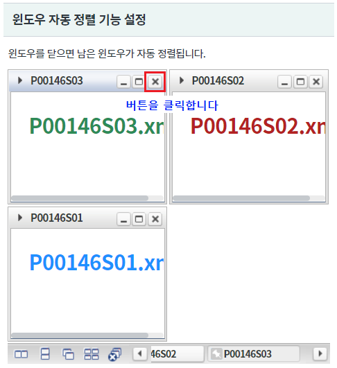
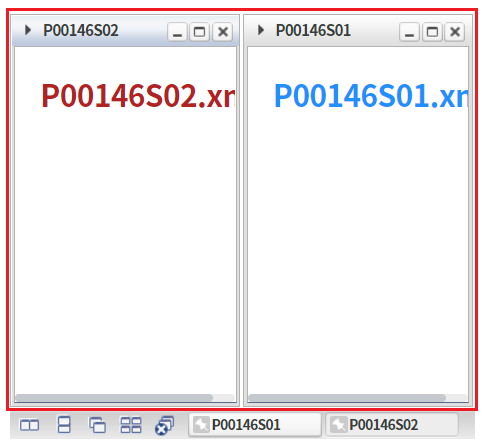
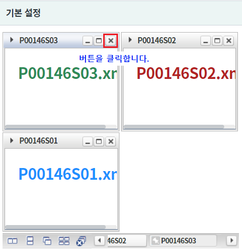
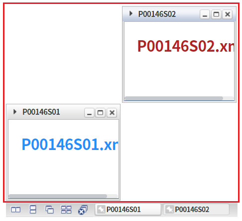
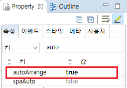
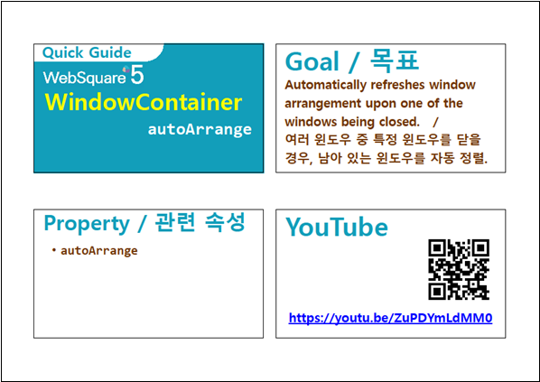

윈도우를 닫으면 남은 윈도우가 자동 정렬되는 기능 예제입니다. 속성 autoArrange 지정을 통해 사용할 수 있습니다. 이 기능은 정렬 기능이 설정된 경우 동작합니다.
윈도우 자동 정렬 기능 설정
(기본) 윈도우 자동 정렬 기능 미설정
영역 [윈도우 자동 정렬 기능 설정]의 WindowContainer의 첫번째 윈도우를 닫습니다.
[브라우저(Chrome) 실행 예시]

남은 윈도우가 재 정렬됩니다.
[브라우저(Chrome) 실행 예시]

영역 [기본 설정]의 WindowContainer의 첫번째 윈도우를 닫습니다.
[브라우저(Chrome) 실행 예시]

남은 윈도우의 위치가 동일하게 유지됩니다.
[브라우저(Chrome) 실행 예시]

WindowContainer의 속성을 정의합니다.
[필수] autoArrange="true" //윈도우 재정렬 지정
그림 1.웹스퀘어5 SP5 스튜디오의 Property View(속성창) 예시

[소스 코드 예시]
<!-- windowContainer 의 소스 본문 예시 --> <w2:windowContainer autoArrange="true" id="wdc_exam2"> <!-- 중략 --> </w2:windowContainer>
autoArrange
[웹스퀘어5 SP5 개발 가이드] WindowContainer
링크 : https://docs1.inswave.com/sp5_user_guide/2059d4ce88b2fc16#c65cb349eb266637
[웹스퀘어5 SP5 개발 가이드] WindowContainer의 자동 정렬 (autoArrange)
링크 : https://docs1.inswave.com/sp5_user_guide/2059d4ce88b2fc16#3b2371b0cef812ae
WindowContainer의 자동 정렬 (autoArrange)
링크 : https://youtu.be/ZuPDYmLdMM0
